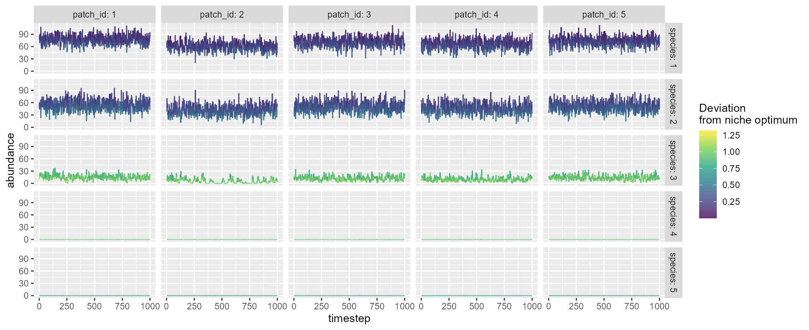
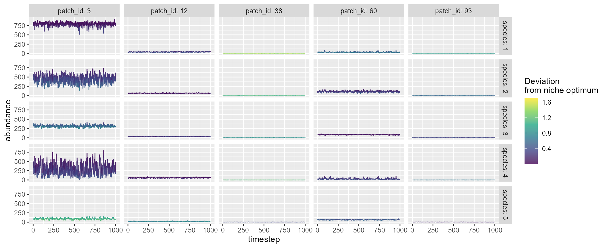

mcsim() simulates metacommunity dynamics in a given
landscape. Community dynamics are modeled based on the Beverton-Holt
function. Although this function is designed to be compatible with
brnet(), users can provide their distance matrix to
simulate dynamics in any landscape. The key arguments are the number of
habitat patches (n_patch) and the number of species in a
metacommunity (n_species). Metacommunity dynamics are
simulated through (1) local dynamics (population growth and competition
among species), (2) immigration, and (3) emigration.
The function returns:
df_dynamics data frame containing simulated
metacommunity dynamics*.
df_species data frame containing species
attributes.
df_patch data frame containing patch attributes.
df_diversity data frame containing diversity metrics
(α, β, and γ).
distance_matrix distance matrix used in the
simulation.
interaction_matrix species interaction matrix, in
which species X (column) influences species Y (row).
*NOTE: The warm-up and burn-in periods will not be included in return values.
The following script simulates metacommunity dynamics with
n_patch = 5 and n_species = 5. By default,
mcsim() simulates metacommunity dynamics with 200 warm-up
(initialization with species introductions: n_warmup), 200
burn-in (burn-in period with no species introductions:
n_burnin), and 1000 time-steps for records
(n_timestep).
mc <- mcsim(n_patch = 5, n_species = 5)Users can visualize the simulated dynamics using
plot = TRUE, which will show five sample patches and
species that are randomly chosen:
mc <- mcsim(n_patch = 5, n_species = 5, plot = TRUE)
A named list of return values:
mc
#> $df_dynamics
#> # A tibble: 25,000 x 9
#> timestep patch_id mean_env env carrying_capacity species niche_optim
#> <dbl> <dbl> <dbl> <dbl> <dbl> <dbl> <dbl>
#> 1 1 1 0 0.0314 100 1 0.526
#> 2 1 1 0 0.0314 100 2 0.437
#> 3 1 1 0 0.0314 100 3 0.158
#> 4 1 1 0 0.0314 100 4 -0.142
#> 5 1 1 0 0.0314 100 5 -0.262
#> 6 1 2 0 0.149 100 1 0.526
#> 7 1 2 0 0.149 100 2 0.437
#> 8 1 2 0 0.149 100 3 0.158
#> 9 1 2 0 0.149 100 4 -0.142
#> 10 1 2 0 0.149 100 5 -0.262
#> # ... with 24,990 more rows, and 2 more variables: r_xt <dbl>, abundance <dbl>
#>
#> $df_species
#> # A tibble: 5 x 6
#> species mean_abundance r0 niche_optim sd_niche_width p_dispersal
#> <dbl> <dbl> <dbl> <dbl> <dbl> <dbl>
#> 1 1 39.3 4 0.526 0.573 0.1
#> 2 2 0 4 0.437 0.112 0.1
#> 3 3 76.6 4 0.158 0.475 0.1
#> 4 4 48.1 4 -0.142 0.964 0.1
#> 5 5 50.0 4 -0.262 0.915 0.1
#>
#> $df_patch
#> # A tibble: 5 x 5
#> patch_id alpha_div mean_env carrying_capacity disturbance
#> <dbl> <dbl> <dbl> <dbl> <dbl>
#> 1 1 4 0 100 0
#> 2 2 4 0 100 0
#> 3 3 4 0 100 0
#> 4 4 4 0 100 0
#> 5 5 4 0 100 0
#>
#> $df_diversity
#> # A tibble: 1 x 3
#> alpha_div beta_div gamma_div
#> <dbl> <dbl> <dbl>
#> 1 4 1 4
#>
#> $df_xy_coord
#> # A tibble: 5 x 2
#> x_coord y_coord
#> <dbl> <dbl>
#> 1 8.12 3.53
#> 2 1.67 1.18
#> 3 0.123 3.74
#> 4 2.97 1.28
#> 5 8.88 6.15
#>
#> $distance_matrix
#> 1 2 3 4 5
#> 1 0.000000 6.867894 8.001105 5.616935 2.735859
#> 2 6.867894 0.000000 2.989704 1.309113 8.762926
#> 3 8.001105 2.989704 0.000000 3.761916 9.084224
#> 4 5.616935 1.309113 3.761916 0.000000 7.658076
#> 5 2.735859 8.762926 9.084224 7.658076 0.000000
#>
#> $interaction_matrix
#> [,1] [,2] [,3] [,4] [,5]
#> [1,] 1 0 0 0 0
#> [2,] 0 1 0 0 0
#> [3,] 0 0 1 0 0
#> [4,] 0 0 0 1 0
#> [5,] 0 0 0 0 1brnet() + mcsim()
Return values of brnet() are compatible with
mcsim(). For example, df_patch$environment,
df_patch$n_patch_upstream, and
df_patch$distance_matrix may be used to inform parameters
of mcsim():
patch <- 100
net <- brnet(n_patch = patch, p_branch = 0.5, plot = F)
mc <- mcsim(n_patch = patch, n_species = 5,
mean_env = net$df_patch$environment,
carrying_capacity = net$df_patch$n_patch_upstream*10,
distance_matrix = net$distance_matrix,
plot = T)
Users may use the following arguments to custom metacommunity simulations regarding (1) species attributes, (2) competition, (3) patch attributes, and (4) landscape structure.
Arguments: r0, niche_optim
OR min_optim and max_optim,
sd_niche_width OR min_niche_width and
max_niche_width, niche_cost,
p_dispersal , zeta
Species attributes are determined based on the maximum reproductive
rate r0, optimal environmental value
niche_optim (or min_optim and
max_optim for random generation of
niche_optim), niche width sd_niche_width (or
min_niche_width and max_niche_width for random
generation of sd_niche_width) and dispersal probability
p_dispersal (see Model description for
details).
For optimal environmental values (niche optimum), the function by
default assigns random values to species as: \(\mu_i \sim Unif(\mu_{min}, \mu_{max})\),
where users can set values of \(\mu_{min}\) and \(\mu_{max}\) using min_optim
and max_optim arguments (default:
min_optim = -1 and max_optim = 1).
Alternatively, users may specify species niche optimums using the
argument niche_optim (scalar or vector). If a single value
or a vector of niche_optim is provided, the function
ignores min_optim and max_optim arguments.
Similarly, the function by default assigns random values of \(\sigma_{niche}\) to species as: \(\sigma_{niche,i} \sim Unif(\sigma_{niche,min},
\sigma_{niche,max})\). Users can set values of \(\sigma_{niche,min}\) and \(\sigma_{niche,max}\) using
min_niche_width and max_niche_width arguments
(default: min_niche_width = 0.1 and
max_niche_width = 1). If a single value or a vector of
sd_niche_width is provided, the function ignores
min_niche_width and max_niche_width
arguments.
The argument niche_cost determines the cost of having
wider niche. Smaller values imply greater costs of wider niche (i.e.,
decreased maximum reproductive rate; default:
niche_cost = 1). To disable (no cost of wide niche), set
niche_cost = Inf.
For other parameters, users may specify species attributes by giving
a scalar (assume identical among species) or a vector of values whose
length must be one or equal to n_species. Default values
are r0 = 4, sd_niche_width = 1, and
p_dispersal = 0.1.
The argument zeta determines the sensitivity to
environmental pollutants as \(exp(-\zeta
q)\), which will be multiplied with the patch-specific population
growth to represent negative impacts of pollutants. \(q\) represents the concentration of
hypothetical environmental pollutants (see q in patch
attributes). The parameter \(\zeta\)
determines the sensitivity to environmental pollutants, and larger
values indicate greater species sensitivity. No pollutant effect if
\(\zeta = 0\).
Arguments: interaction_type,
alpha OR min_alpha and
max_alpha
The argument interaction_type determines whether
interaction coefficient alpha is a constant or random
variable. If interaction_type = "constant", then the
interaction coefficients \(\alpha_{ij, i \ne
j}\) for any pairs of species will be set as a constant
alpha (i.e., off-diagonal elements of the interaction
matrix). If interaction_type = "random", \(\alpha_{ij, i \ne j}\) will be drawn from a
uniform distribution as \(\alpha_{ij, i \ne j}
\sim Unif(\alpha_{min}, \alpha_{max})\) with corresponding
arguments min_alpha and max_alpha. The
argument alpha is ignored under the scenario of random
interaction strength (i.e., interaction_type = "random").
Note that the diagonal elements of the interaction matrix (\(\alpha_{ii}\)) are always 1.0 regardless of
interaction_type, as alpha is the strength of
interspecific competition relative to that of intraspecific competition
(see Model description). By default,
interaction_type = "constant" and
alpha = 0.
Arguments: carrying_capacity,
mean_env, sd_env,
spatial_auto_cor, phi, p_disturb,
i_disturb , q
The arguments carrying_capacity (default:
carrying_capacity = 100) and mean_env
(default: mean_env = 0) determines mean environmental
values of habitat patches, which can be a scalar (assume identical among
patches) or a vector (length must be equal to n_patch).
The arguments sd_env (default:
sd_env = 0.1), spatial_auto_cor (default:
spatial_auto_cor = FALSE) and phi (default:
phi = 1) determine spatio-temporal dynamics of
environmental values. sd_env determines the magnitude of
temporal environmental fluctuations. If
spatial_auto_cor = TRUE, the function models spatial
autocorrelation of temporal environmental fluctuation based on a
multi-variate normal distribution. The degree of spatial autocorrelation
would be determined by phi, the parameter describing the
strength of distance decay in spatial autocorrelation.
Users can also define disturbance probability
(p_disturb) and mortality (i_disturb). When
disturbance occurs, all habitat patches are reduced by
i_disturb. i_disturb can be identical or
different across habitat patches.
Lastly, the argument q defines concentration of
hypothetical environmental pollutants. The values will be converted as
\(exp(-\zeta q)\), which will be
multiplied with the patch-specific population growth. The parameter
\(\zeta\) determines the sensitivity to
environmental pollutants (see argument zeta in species
attributes).
Arguments: xy_coord OR
distance_matrix, landscape_size,
theta
These arguments define landscape structure. By default, the function
produces a square-shaped landscape (landscape_size = 10 on
a side) in which habitat patches are distributed randomly through a
Poisson point process (i.e., x- and y-coordinates of patches are drawn
from a uniform distribution). The parameter θ describes the shape of
distance decay in species dispersal (see Model
description) and determines patches’ structural connectivity
(default: theta = 1). Users can define their landscape by
providing either xy_coord or distance_matrix
(landscape_size will be ignored if either of these
arguments is provided). If xy_coord is provided (2-column
data frame denoting x- and y-coordinates of patches, respectively;
NULL by default), the function calculates the distance
between patches based on coordinates. Alternatively, users may provide
distance_matrix (the object must be matrix),
which describes the distance between habitat patches. The argument
distance_matrix overrides xy_coord.
Arguments: n_warmup,
n_burnin, n_timestep
The argument n_warmup is the period during which species
introductions occur (default: n_warmup = 200). The initial
number of individuals introduced follows a Poisson distribution with a
mean of 0.5 and independent across space and time. This random
introduction events occur multiple times over the n_warmup
period, in which propagule_interval determines the timestep
interval of the random introductions (default:
propagule_interval = ceiling(n_warmup / 10)).
The argument n_burnin is the period that will be
discarded as burn-in to remove the influence of initial values
(default: n_burnin = 200). During the burn-in period,
species introductions do not occur.
The argument n_timestep is the simulation peiord that is
recorded in the return df_dynamics (default:
n_timestep = 1000). As a result, with the default setting,
the function simulates 1400 timesteps (n_warmup +
n_burnin + n_timestep = 1400) but returns only
the last 1000 timesteps as the resulting metacommunity dynamics. All the
derived statistics (e.g., diversity metrics in df_diversity
and df_patch) will be calculated based on the results
during n_timestep.
Full model descriptions are available at: https://doi.org/10.1073/pnas.2105574118